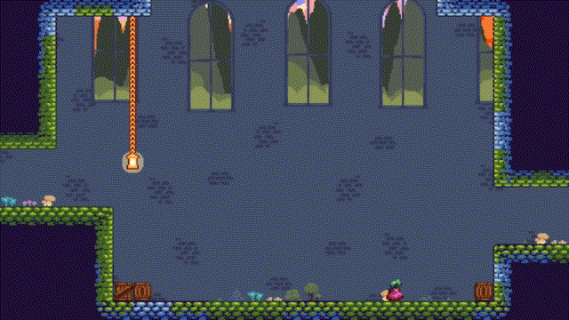

<< Back
Locked Away
Locked Away is a 2D metroidvania platformer made in Godot. My brother and I originally made this game for the 2023 Seattle Game Jam. After the jam was finished, we spent another month polishing the game and expanding it with more content.
In Locked Away, players play as a princess who has been locked into the dungeons of a castle. The princess has long hair which she can use as a grappling hook to swing around, but her hair has been cut off by the jealous queen. Players must collect magic seeds throughout the level to regrow the princess's hair so that she can escape.

Making a Platformer
I'd made countless unfinished platformers by the time I started making Locked Away, so I walked into the project with a good handle on the nuances involved in making one, including things like cayote time and jump-timing forgiveness (in which the game is able to accept a jump input that is given just moments before the player actually touches the ground).
This let me focus on the challenges that were more unique to this game, like the grappling mechanic. Originally, we wanted players to be able to grapple, pull, and swing freely on the hooks, but this proved difficult to get right, so in the interest of time, we tighted our scope by making the hook a single-direction pull.
This once again, allowed me to focus on other challenges. The game was very inspired by Celeste, so I spent a lot of time getting the room-to-room transitions and player respawns to work just right.

A Bite-Sized Metroidvania
We knew from the outset that we wanted the game to be a metroidvania, but the problem with this was that metroidvanias usually provide progression in the form of collectable power-ups that each introduce a new mechanic. Adding lots of different mechanics in this way was something we knew we didn't have time for, which is what led us to the idea of the grappling hook.
Since the princess grapples around using her hair, the range of her grappling hook is determined by how long her hair is. Each time the players find a new magic seed, her hair grows longer, and players are able to grapple a little further than they were before. This allowed us to make a metroidvania-style level design while only having one mechanic to worry about.
Also, since many metroidvanias have puzzle elements, we wanted to add some of our own, but again, how to do this without introducing another mechanic? Our solution was the wooden switches you can see in the animation above. The switches are essentially another type of grappling hook, but when pulled they also invert the state of the red blocks on the map, which allowed us to make fun puzzle-platforming sections while still centering the game around one simple mechanic.